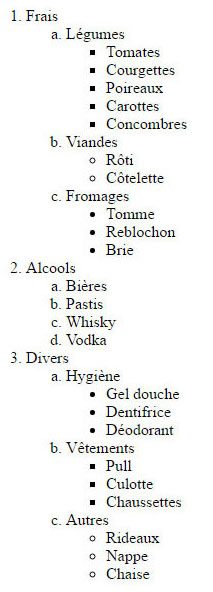

Les Listes à puces - Mise en pratique HTML
Suite au cours sur les listes à puces HTML, nous allons mettre en pratique les différentes balises HTML et leurs attributs correspondant à cette structure.
Vous allez trouver ci-dessous différentes images représentant des structures de listes HTML que vous devez reproduire.
Exercice 1 - Carte de restaurant

Entrées
- Salades
- César
- Cévenole
- Chèvre chaud
- Charcuterie
- Rillettes / Pâté
- Saucissons
Plats
- Viandes
- Entrecôte frite
- Magret de canard au gros sel
- Poissons
- Vegan
- Mousse aux marrons
- Ragoût de haricot blanc à la sauce tomate
<h3>Entrées</h3>
<ul>
<li>Salades
<ol>
<li>César</li>
<li>Cévenole</li>
<li>Chèvre chaud</li>
</ol>
</li>
<li>Charcuterie
<ol type="I">
<li>Rillettes / Pâté</li>
<li>Saucissons</li>
</ol>
</li>
</ul>
<h3>Plats</h3>
<ul>
<li>Viandes
<ul>
<li>Entrecôte frite</li>
<li>Magret de canard au gros sel</li>
</ul>
</li>
<li>Poissons
<ul>
<li>Loup</li>
<li>Saumon en papillote</li>
</ul>
</li>
<li>Vegan
<ul>
<li>Mousse aux marrons</li>
<li>Ragoût de haricot blanc à la sauce tomate</li>
</ul>
</li>
</ul>
Exercice 2 - Liste de courses

- Frais
- Légumes
- Tomates
- Courgettes
- Poireaux
- Carottes
- Concombres
- Viandes
- Fromages
- Alcools
- Bières
- Pastis
- Whisky
- Vodka
- Divers
- Hygiène
- Gel douche
- Dentifrice
- Déodorant
- Vêtements
- Autres
<ol>
<li>Frais
<ol type="a">
<li>Légumes
<ul style="list-style:square;">
<li>Tomates</li>
<li>Courgettes</li>
<li>Poireaux</li>
<li>Carottes</li>
<li>Concombres</li>
</ul>
</li>
<li>Viandes
<ul style="list-style:circle;">
<li>Rôti</li>
<li>Côtelette</li>
</ul>
</li>
<li>Fromages
<ul style="list-style:disc;">
<li>Tomme</li>
<li>Reblochon</li>
<li>Brie</li>
</ul>
</li>
</ol>
</li>
<li>Alcools
<ol type="a">
<li>Bières</li>
<li>Pastis</li>
<li>Whisky</li>
<li>Vodka</li>
</ol>
</li>
<li>Divers
<ol type="a">
<li>Hygiène
<ul style="list-style:disc;">
<li>Gel douche</li>
<li>Dentifrice</li>
<li>Déodorant</li>
</ul>
</li>
<li>Vêtements
<ul style="list-style:square;">
<li>Pull</li>
<li>Culotte</li>
<li>Chaussettes</li>
</ul>
</li>
<li>Autres
<ul style="list-style:circle;">
<li>Rideaux</li>
<li>Nappe</li>
<li>Chaise</li>
</ul>
</li>
</ol>
</li>
</ol>